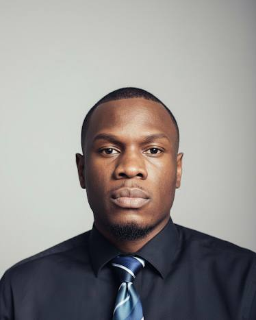

01
Les principes financiers sont d'abord des principes de vie : ils apprennent à arbitrer, à anticiper, à préserver. Mieux les comprendre, c'est décider mieux.
L'appétence
Pourquoi la finance ?
Une candidature pour le poste de Finance Graduate Trainee chez ofi Douala — rigueur analytique, souci du détail, intégrité.
Voir les documents
Diplômé ingénieur des procédés (2024), formé à la comptabilité financière par l'Université de Pennsylvanie, certifié SAP Business Analyst et formé à l'audit interne — une trajectoire qui relie l'exigence industrielle aux réflexes du contrôle financier.
Les principes financiers sont d'abord des principes de vie : ils apprennent à arbitrer, à anticiper, à préserver. Mieux les comprendre, c'est décider mieux.
Vérifier une donnée, suivre un écart, sécuriser une information : les gestes du contrôle qualité sont ceux du contrôle financier.
SAP, Excel, reporting : des outils qui transforment une donnée brute en décision chiffrée, argumentée et partageable.
Diplôme et certifications : les fondations vérifiables d'une reconversion assumée vers la finance.
Du contrôle qualité à la standardisation des procédés, j'ai appris à lire un dossier, à suivre un écart et à produire un reporting fiable — les gestes du quotidien en Finance.
Les compétences attendues pour saisir et suivre des transactions comptables, contrôler des rapprochements et produire du reporting — sans jargon, avec méthode.
Diplômes, certificats et attestations vérifiables. Cliquez sur une vignette pour agrandir l'aperçu.
De l'excellence industrielle vers les compétences finance & data — la même exigence : comprendre, chiffrer, décider.